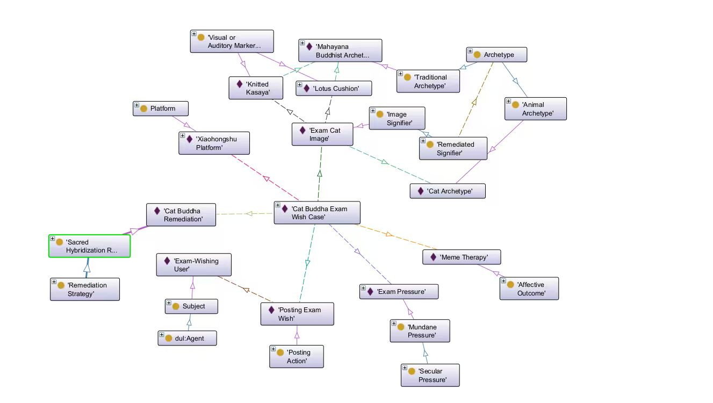

WishGraph
3.1 Data and Extraction Raw materials → structured data
The dataset contains 9 cyber-ritual cases collected from Xiaohongshu (RedNote), TikTok, Instagram, Bilibili and X. Each row is one ritual event encoded across 28 ontology dimensions: a core layer that mirrors the 5P framework, and a set of facet columns (↳) that classify the core value into a typed sub-category — for example which kind of pressure, which kind of signifier, or which kind of archetype is at work.
1 · Case Identity
CyberRitualCase
2 · Platform
Platform
3 · Subject (Person)
Subject
4 · Performative Action
PerformativeActionPostingActionCommentingAction
5 · Secular Pressure
SecularPressureMundanePressureExistentialPressure
6 · Remediated Signifier
RemediatedSignifierImageSignifierVideoSignifier
7 · Ritual Symbol
RitualSymbolMantraEmojiVisualOrAuditoryMarker
8 · Archetype
ArchetypeTraditionalArchetypeModernArchetypeAnimalSecularCommodity
9 · Remediation Strategy
RemediationStrategyDigitalTranspositionSacredAmplificationSacredHybridizationSecularIdolDeificationSymbolicEnchantment
10 · Affective Outcome
AffectiveOutcome
| # | Case | Platform | Subject | Performative Action | Secular Pressure | Remediated Signifier | Archetype | Remediation Strategy | Affective Outcome |
|---|
↔ Scroll horizontally to see all ten dimensions.
▸ Full dataset — all 28 dimensions (9 cases × 28 columns)
3.2 A-Box and Knowledge Graph Structured data → RDF instances → knowledge graph

Cat Buddha Exam Wish Case;
the boxes around it are the dimension values attached to it — Xiaohongshu (platform),
Exam-Wishing User (subject), Posting Exam Wish (performative action),
Exam Pressure (secular pressure), Exam Cat Image (remediated signifier),
Cat Buddha Remediation (remediation strategy) and Meme Therapy (affective outcome).
Sacred Hybridization
3.3 SPARQL and Findings Query the graph and interpret the results
The five competency questions were reformulated as SPARQL queries and executed against the A-Box. Every query below is followed by its actual result set, so the chapter doubles as evidence that the ontology is queryable rather than merely descriptive.
CQ1 — Performative Action, Subject and Platform
What performative actions are carried out in each cyber-ritual case, who performs them, and on which platform does the case circulate?
每一个案例中发生了什么 performative action？由谁执行？在哪里？
| Case | Subject | Performative Action | Platform |
|---|---|---|---|
| Case_CatWish | ExamWishPoster | Posting_ExamWish | Xiaohongshu |
| Case_DigitalEnlightenment | DigitalEnlightenmentPoster | Posting_BuddhaTeaching | Tiktok |
| Case_HealthWish | HealthWishPoster | Posting_HealthWish | Xiaohongshu |
| Case_InstagramTraditionalPrayer | TraditionalPrayerPoster | Posting_NewYearPrayer | |
| Case_InstagramWealth | MaterialisticUser, WealthClaimCommenter | Commenting_ClaimWealth, Posting_WealthManifesting | |
| Case_ManifestingKardashian | KardashianManifestingPoster | Posting_ManifestingSpell | Xiaohongshu |
| Case_SubliminalRomance | RomanceSeekingUser | Posting_SubliminalVideo | Bilibili |
| Case_XWealthManifesting | ManifestPoster | Posting_Manifest2026 | XPlatform |
| Case_XiaohongshuCET6Comment | CET6Commenter | Commenting_CET6Manifestation | Xiaohongshu |
Read-out. The hasPerformativeAction layer separates posting rituals (creating the wishing artefact) from commenting rituals (joining an existing wish thread) — the latter concentrating on Xiaohongshu, where the comment box itself becomes the ritual space. Cases with two subjects (eg. Case_InstagramWealth) reveal a split between the manifesting poster and the wealth-claiming commenter, i.e. the ritual is co-authored across two social roles on the same platform.
CQ2 — Trigger / Pressure
Which secular pressure triggers each cyber-ritual case, and what type of pressure is it?
每个网络祈愿案例由什么 secular pressure 触发？该压力属于什么类型？
| Case | Secular Pressure | Pressure Type |
|---|---|---|
| Case_CatWish | ExamPressure | Mundane |
| Case_DigitalEnlightenment | ExistentialPressure_ModernAnxiety | Existential |
| Case_HealthWish | HealthProblem | Existential |
| Case_InstagramTraditionalPrayer | MundanePressure_FutureUncertainty | Mundane |
| Case_InstagramWealth | MundanePressure_StatusAnxiety | Mundane |
| Case_ManifestingKardashian | CareerWealth | Mundane |
| Case_SubliminalRomance | MundanePressure_RomanticAnxiety | Mundane |
| Case_XWealthManifesting | MundanePressure_WealthDesire | Mundane |
| Case_XiaohongshuCET6Comment | ExamPressure | Mundane |
Read-out. Only two cases are triggered by an existential pressure (modern anxiety and illness); the remaining seven are mundane — exams, status, career, romance and wealth. Cyber-ritual wishing in this corpus is therefore predominantly a response to everyday precarity rather than to mortality or cosmic doubt. Note that ExamPressure recurs in two different ritual formats (a posting ritual in CatWish and a commenting ritual in the CET-6 case), showing how one pressure can be remediated in more than one performative form.
CQ3 — Transformation and Affective Outcome
Which remediation strategy transforms each cyber-ritual case, and what outcome does the case resolve into?
每个案例使用了什么 remediation strategy，又最终产生了什么 affective outcome？
| Case | Remediation Strategy | Mechanism Type | Affective Outcome |
|---|---|---|---|
| Case_CatWish | CatBuddha | Sacred Hybridization | MemeTherapy |
| Case_DigitalEnlightenment | PsychedelicAestheticRemediation | Sacred Amplification | InnerPeace |
| Case_HealthWish | RestoreOriginal | Digital Transposition | HealthRecovery |
| Case_InstagramTraditionalPrayer | RestoreOriginal | Digital Transposition | NewYearVibes |
| Case_InstagramWealth | Remediation_LuxuryCar | Symbolic Enchantment | FinancialFreedom |
| Case_ManifestingKardashian | PopIdolGod | Secular Idol Deification | WealthDelusion |
| Case_SubliminalRomance | ButterflyGod | Sacred Hybridization | RomanticAttraction |
| Case_XWealthManifesting | Remediation_CashFetishization | Symbolic Enchantment | Prosperity |
| Case_XiaohongshuCET6Comment | PopIdolGod | Secular Idol Deification | AcademicSuccess |
Read-out. Five distinct remediation mechanisms are attested. RestoreOriginal (digital transposition) simply re-posts a traditional icon unchanged, whereas PopIdolGod (secular idol deification) and SymbolicEnchantment replace the deity with a contemporary commodity — a pop icon, a sports car, a stack of cash. The outcome vocabulary follows the same gradient: restorative strategies yield domain-specific reassurance (HealthRecovery, NewYearVibes), while deifying/enchanting strategies yield self-persuasive states (WealthDelusion, Prosperity, FinancialFreedom).
CQ4 — Signifier and Ritual Symbol
Which remediated signifier is employed in each cyber-ritual case, and which ritual symbols does it contain?
每个网络祈愿案例使用了什么被再媒介化的 signifier？该 signifier 包含哪些 ritual symbols？
| Case | Remediated Signifier | Signifier Type | Ritual Symbols |
|---|---|---|---|
| Case_CatWish | ExamCatImg | Image | KnittedKasaya · LotusCushion |
| Case_DigitalEnlightenment | PsychedelicBuddhaVideo | Video | LotusCushion · PsychedelicAura |
| Case_HealthWish | BlueBuddhaImg | Image | — |
| Case_InstagramTraditionalPrayer | TraditionalBuddhaPostImage | Image | — |
| Case_InstagramWealth | SportsCarManifestingVideo | Video | Emoji_PrayingHands · LoFiBeatAndSlowMo · Mantra_ClaimEnergy |
| Case_ManifestingKardashian | KrisJennerMemeImg | Image | ManifestingMantraText |
| Case_SubliminalRomance | SubliminalButterflyVideo | Video | GlitterAesthetic · SubliminalAudioFrequency |
| Case_XWealthManifesting | CashManifestingVideo | Video | Emoji_RedHeart |
| Case_XiaohongshuCET6Comment | KrisJennerReplyImage | Image | Mantra_CET6Success |
Read-out. The signifier type tracks the platform economy: image signifiers cluster on Xiaohongshu and Instagram (poster-style, easy to save and re-post), while video signifiers dominate TikTok, Bilibili and X, where motion and audio frequency carry the ritual charge. Ritual symbols are not decoration — they are the load-bearing vocabulary of the practice: a mantra string, an emoji, a knitted kasaya. Notably, the two "restore-original" cases carry no marked ritual symbol at all, because their sacredness is inherited rather than produced.
CQ5 — Archetype and Archetype Type
For each cyber-ritual case, which archetype is remediated by its signifier, and what type of archetype is it?
对于每个网络祈愿案例，其 signifier 重新表现了什么 archetype？该 archetype 属于什么类型？
| Case | Archetype | Archetype Type |
|---|---|---|
| Case_CatWish | Cat, Mahayana | Animal, Traditional |
| Case_DigitalEnlightenment | Mahayana | Traditional |
| Case_HealthWish | MedicineBuddha | Traditional |
| Case_InstagramTraditionalPrayer | MedicineBuddha | Traditional |
| Case_InstagramWealth | LuxurySportsCar | Secular Commodity |
| Case_ManifestingKardashian | KrisJennerPopIcon | Modern |
| Case_SubliminalRomance | Butterfly | Animal |
| Case_XWealthManifesting | StackOfCash | Secular Commodity |
| Case_XiaohongshuCET6Comment | KrisJennerPopIcon | Modern |
Read-out. The corpus preserves four archetype types: Traditional (Mahayana, Medicine Buddha), Animal (cat, butterfly), Modern (Kris Jenner as a meme-pop icon) and Secular Commodity (luxury sports car, stack of cash). The last two are the analytical payoff of the ontology: they show the moment when the sacred slot is filled not by a deity but by capital. Case_CatWish is the only hybrid case, combining an animal archetype with a traditional one — precisely the "sacred hybridization" that the Protégé graph models through wg:SacredHybridization.